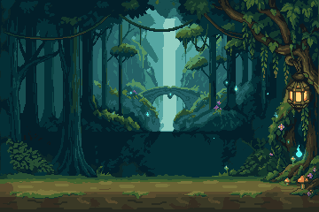
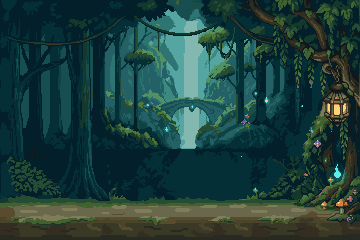
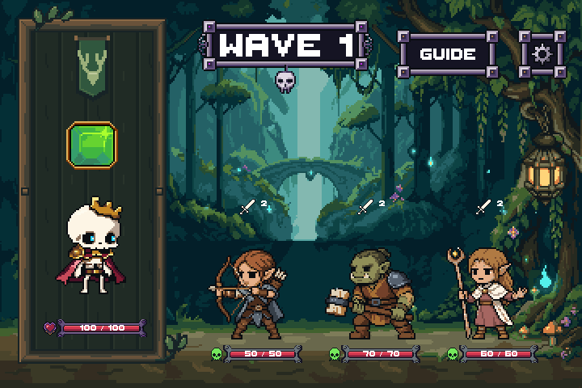
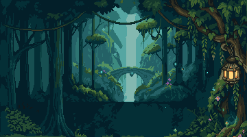
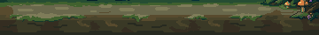
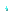
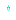
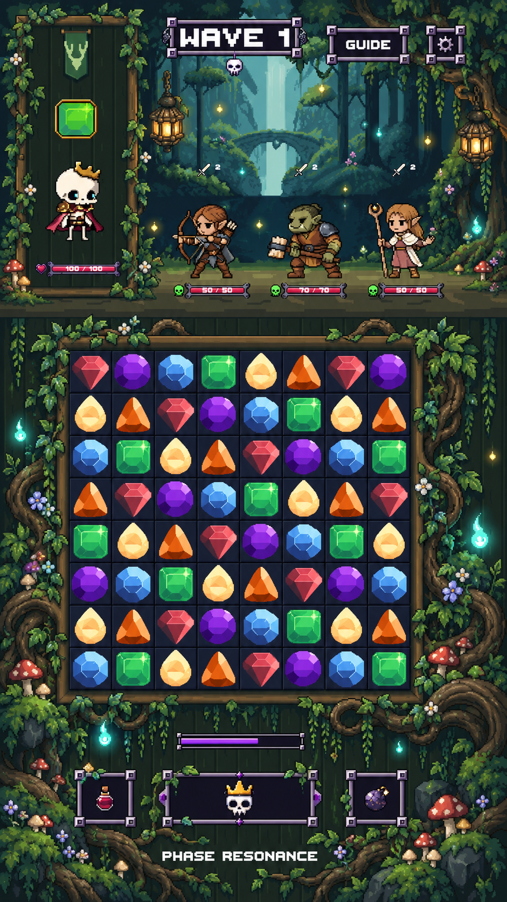

Review candidate · feature/forest-zone-staged-rebuild · no merge
One PixelLab environment source, cleaned in LibreSprite. Deep teal woodland, a distant bridge and waterfall, warm lantern ambiance and a quiet flat clearing. The existing portrait, controls and three enemies are readability samples. This is an art-only Unity scene, not live combat.


Merged one redundant dark tone, adjusted waterfall/floor values, and consolidated 189 tiny disconnected highlight pixels in selected foliage regions. No resampling or blur.

Open 4× source-pixel capture · Unity background at native 1×




Grove and ground are independent opaque plates. Three wisp cores are separate transparent sprites with canvas clearance for later motion. The lantern and waterfall remain static scenery in Stage 1; final decorative and animation preparation stages have not started.
Primary mood/composition reference; later board and HUD surroundings are not part of this stage.

Unity compilation and the dedicated art-scene check passed. The 360×240 Unity background is pixel-identical to the LibreSprite export; 1440×960 is an exact 2× enlargement of the 720×480 capture. All 24,100 pre-existing tracked files matched their starting hashes before adding the task-status documentation. Opaque scenery and binary-alpha wisp sprites; no filtering, compression or native resampling. No live combat or device test is claimed.
All existing asset files, shared board/player dimensions, lower HUD and production bindings are preserved. Stop here for Stage 1 approval. Stage 2 (player frame) has not begun.